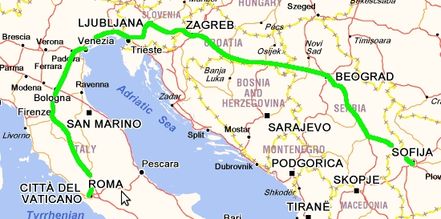
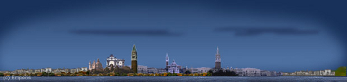
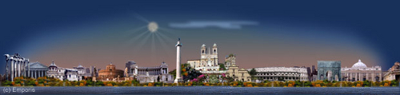
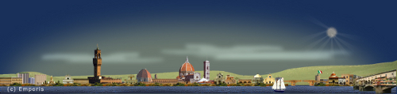

Кораб: 20 km
Автомобил: 26819 km
Влак: 3972 km
Кораб: 928 km
Общо: 61134 km
Градове: 52
Държави: 20
Континенти: 2
Обиколка на Италия
Човек и добре да живее се жени. Така ли беше? Може би дълбоко в мен дреме романтик или обичам традициите, ето защо реших да предложа на Хриси да се оженим по време на визитата ни във Венеция. Тя беше част от екскурзията ни в Италия. Преди да заминем купих пръстен и зачаках удобния момент.
Екскурзията беше с автобус, организирана от тур агенция, абсолютно стандартна и без изненади. Возиха ни от град на град, спирахме на интересните места. Екскурзоводката беше симпатяга, а хората в автобуса бяха събрани от кол и въже, но нямаше неприятни.

София -Венеция - Флоренция - Рим
Започнахме с междинна нощувка в Загреб, след което продължихме към Лидо ди Йезоло, настанихме се в хотел веднага отидохме на плаж. Курортът е приятен и подреден. Има много хотели но някак не изглежда презастроено и като прибавим огромната плажна ивица, впечатлението е повече от добро. Топнахме се в Адриатическо море, което беше топло като чай, беше август месец. Вечерта се разходихме из препълнения с немски туристи курорт, хапнахме пици и спагети комбинирани с червено вино. Мислех си за следващия ден когато по програма беше разходката във Венеция, нещата вървяха по план.

Виж Галерията от Лидо ди Йезоло
Венеция

Не трябваше да чакам много, след трансфер с корабче, се озовахме на площад Сан Марко. Венеция е невероятна! Изумителен град прорязан от многобройни канали, някой спокойни и романтични, други развълнувани и забързани, изпълнени с кръстосващи лодки и корабчета. Най-интересни са сградите, първоначално имаш чувство, че нещо не им е наред с тази вода пред портите, но постепенно свикваш и започваш да завиждаш на обитателите им за интересния начин на живот. Винаги има едно „но“ за съжаление. Този ден това беше огромният брой туристи изпълнили центъра. Това осуети плановете ми и отложих предложението си за следващата ни спирка Рим.
Виж Галерията от Венеция
Рим

Според старите хора, всички пътища водели към Рим и определено е така, съдейки по броя на туристите там. Трябваше да отлагам отново, и то с цели три дни. Започна да става малко изнервящо но поне имаше тръпка.
Всяка улица в Рим е история, има толкова за гледане, че накрая забравяш какво си видял в началото. Но едно нещо няма да забравя – светлината която обля душата ми, когато пред мен се откри базиликата Свети Петър. Видях я от далеч, в цялото и величие, но не това беше впечатляващото, а това, че сякаш в храма има светлина и топлина, която се пренася в теб когато го зърнеш за пръв път. Дали това е архитектурна особеност на сградата проектирана от великия Микеланджело или нещо друго не знам но определено е истина.
Колизеумът също е впечатляващ, но разграбването му от варварите през годините, донякъде е отнело истинският му блясък. Римският форум, храмът на Весталките и разбира се гробът на Свети Кирил са другите задължителни забележителности.
Виж Галерията от Рим
След три дни в някогашния център на света потеглихме обратно към Флоренция. По пътя се отбихме до Сиена – град бижу. Препоръчвам го горещо. Фактът че нямаше туристи направи визитата ни още по незабравима. Изкачихме се на часовниковата кула и се полюбувахме на централния площад от високо, направихме невероятни панорамни снимки.
Виж Галерията от Сиена
Флоренция

Флоренция е столицата на изкуството. Не си падаме по музей, но има много други красиви и интересни неща. Започнахме с древната църква Санта Кроче, където са погребани Галилей и Микеланджело. След това прекрасната катедрала Санта Мария дел Фиоре и Вратите на Рая. Не пропуснахме и статуята на Давид.
Минахме през Стария Мост, по който са разположени множество златарски магазинчета. Знаех, че последният ми шанс да осъществя романтичния план е в Градините Боболи, последната ни спирка от обиколката на града. Мястото се оказа перфектно, няма много хора, спокойно и красиво е, също предлага великолепна гледка над Флоренция. Разгледахме парковете и езерцата и седнахме да си починем под едно вековно дърво. След кратко или не съвсем притеснение, направих това което мисля, че ще направя само веднъж в живота ми – поисках ръката на любимия човек. Отговорът беше положителен, а другите подробности оставям за себе си.
Виж Галерията от Флоренция